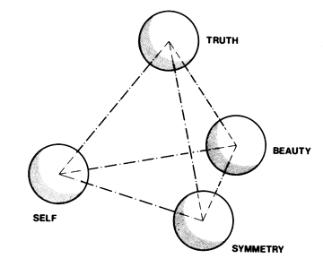

Fig. 542.02 Tetrahedral Analysis of Plato's Triad: The triadic concept of Beauty, Symmetry, and Truth inadvenently omitted the function of the observer. The tetrahedron is the unique symmetrical set of minimum interrelationships.
Copyright © 1997 Estate of R. Buckminster Fuller